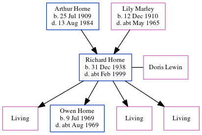

Richard John Horne 1938 - c1999
[ Home ] | [ Calendar ] | [ Surnames Index ] | [ Census Index ] | [ Family History ]The child of Arthur Horne (an electrician) and Lily Marley, Richard Horne, the third cousin once-removed on the father's side of Nigel Horne, was born in Ramsgate, Kent, England on Dec 31, 19381,2,3 and married Doris Lewin (with whom he had 4 children: Nichola Diane, Owen Richard, Susan Ann and Sharon Ruth, along with 3 surviving children) in Thanet, Kent, England around Aug 19684. On Sep 29, 1939, he was living at 47 St Patricks Road in Ramsgate1.
He died c. Feb 1999 in Thanet3.
Parents
- Arthur Herbert was born on Jul 25, 1909
- Lily Ellen was born on Dec 12, 1910
Children
- Owen Richard was born on Jul 9, 1969
Citations
- 1939 Register - Findmypast (was the son of the head of the household)
- England & Wales births 1837-2006 - Findmypast
- England & Wales deaths 1837-2007 - Findmypast
- England & Wales marriages 1837-2008 - Findmypast
Media
England & Wales births 1837-2006 - BMD/B/1939/1/AZ/000549/003
England & Wales deaths 1837-2007 - BMD/D/1999/3/83156469
1939 Register Transcription - TNA-R39-1768-1768C-014-25
Family Tree
Generated by ged2site. Last updated on Jun 11, 2024